Greek Garden Design
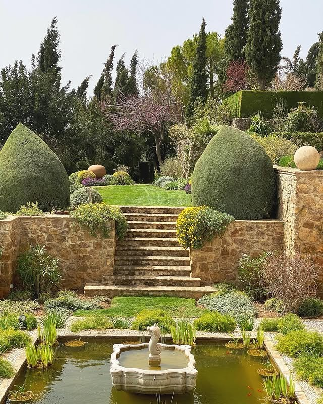
Classic Greek Garden Design
Harmony, symmetry, mythology, and the beauty of the Mediterranean landscape
Classic Greek garden design draws inspiration from the landscapes, architecture, and philosophical ideals of ancient Greece. Unlike the expansive, highly regimented gardens of later European traditions, Greek gardens often celebrated the relationship between architecture and nature, with courtyards, shaded walkways, sacred groves, fruit trees, and spaces for contemplation. Gardens were connected to daily life, mythology, religious ceremonies, and the pursuit of knowledge. Olive trees symbolized peace and prosperity, while water, stone, and fragrant herbs brought sensory richness to outdoor spaces. These principles continue to inspire Mediterranean gardens today, particularly those designed around natural materials, drought-tolerant plants, architectural structure, and a restrained colour palette. For a contemporary interpretation in the Okanagan, Greek garden design can be adapted to the region's sunny summers and relatively dry growing conditions, using hardy Mediterranean-inspired plants, gravel pathways, stone terraces, and carefully managed irrigation.
1. Container Gardens
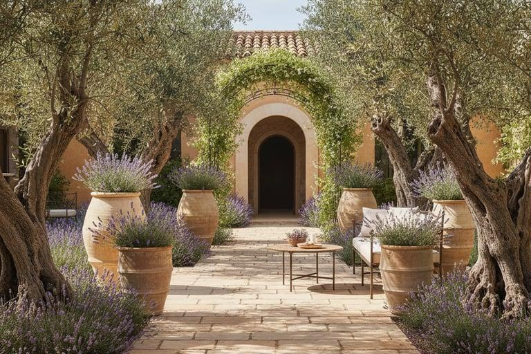
Terracotta containers are among the most characteristic features of Mediterranean garden design. Their warm, earthy tones complement limestone, weathered stone, pale plaster walls, and the silvery foliage of Mediterranean plants. In a Greek-inspired courtyard, clay pots are arranged deliberately to create rhythm, balance, and visual interest. Containers of varying heights and proportions can frame a doorway, line a pathway, soften the edge of a stone terrace, or establish a focal point beneath an archway. Traditional clay pots are porous, allowing air to move through their walls and helping growing media dry more quickly than in many nonporous containers. Although they do not retain moisture as effectively as glazed pots, they offer an attractive and practical option for plants suited to well-drained conditions.
Design principles:
- Vary the scale: Combine large amphora-inspired vessels with medium pots and smaller herb containers.
- Create intentional groupings: Arrange containers in threes or other balanced compositions rather than scattering them randomly.
- Use repetition: Repeat similar clay vessels along a wall or pathway to establish continuity.
- Highlight individual plants: Feature an olive tree, bay laurel, or architectural agave in a prominent container.
- Choose natural finishes: Weathered terracotta, aged stone, and muted clay colours reinforce the historic character.
For the Okanagan climate, containers may require more frequent watering during summer heat. Plants that are not winter-hardy should be moved to a protected location or grown in containers that can be overwintered appropriately.
2. Mediterranean Plants
Greek-inspired planting celebrates foliage, fragrance, texture, and the distinctive forms of trees and shrubs adapted to sunny environments. Rather than relying on continuous floral displays, the garden uses a considered combination of evergreen structure, aromatic herbs, sculptural leaves, and seasonal flowers.
Olive Trees
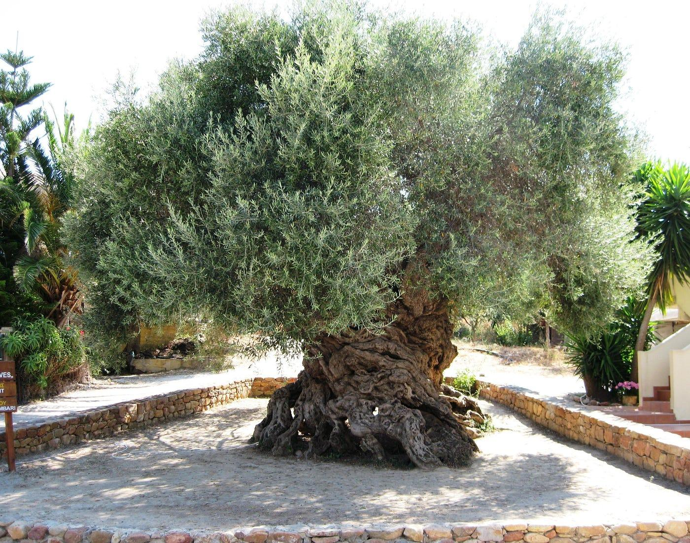
Olive trees (Olea europaea) are among the most recognizable symbols of the Mediterranean. Their silvery-green foliage, gnarled trunks, and sculptural branching create an enduring focal point. In Greek-inspired design, an olive tree can anchor a courtyard, stand beside a stone bench, or serve as the centrepiece of a gravel garden. In the Okanagan, winter cold is a significant limitation, so olive trees are best treated as protected container specimens or experimental plantings in exceptionally favourable microclimates.
Citrus
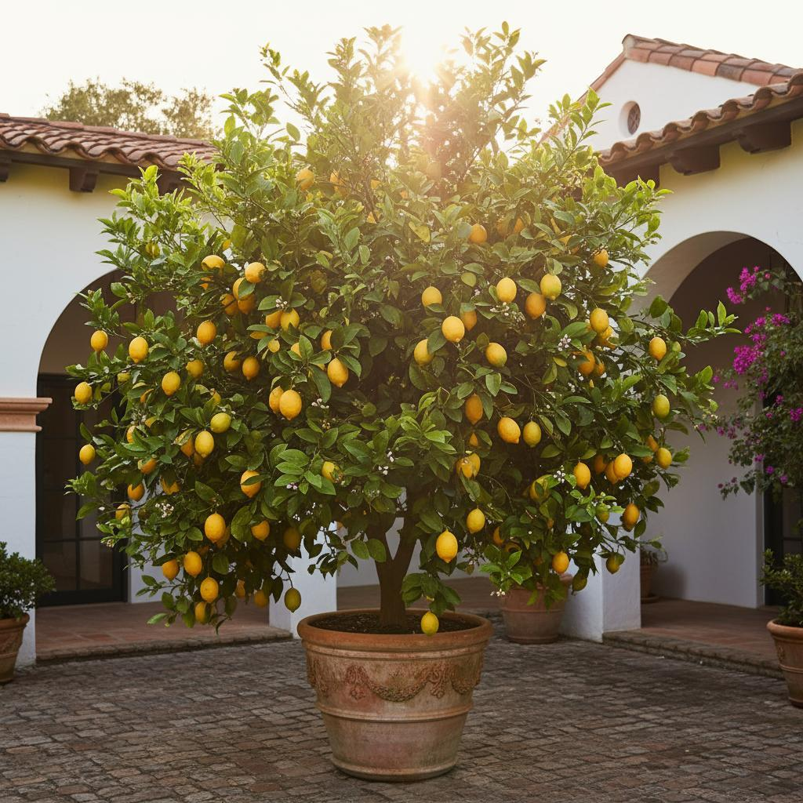
Lemon, orange, and mandarin trees bring glossy foliage, fragrant blossoms, and brightly coloured fruit to Mediterranean courtyards. Their presence evokes the sheltered gardens of southern Europe, where citrus trees are cultivated for both beauty and harvest. In colder climates, citrus is generally best grown in containers and overwintered in a bright, protected indoor space. A potted lemon tree beside a sunny entrance or seating area creates an elegant Mediterranean accent.
Agave
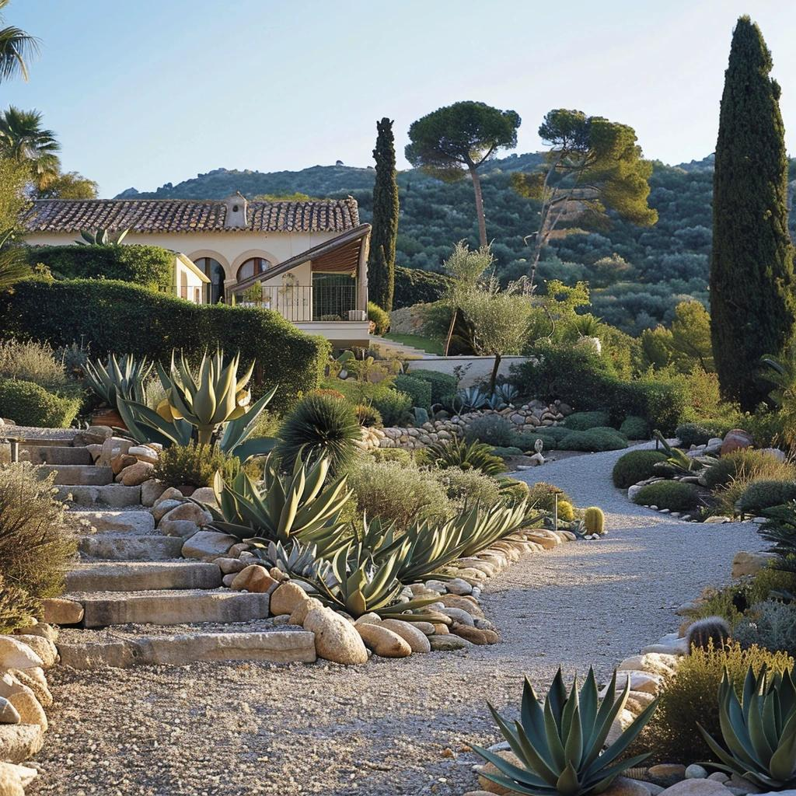
Agave contributes bold, architectural geometry through its symmetrical rosettes and pointed leaves. Its sculptural form contrasts beautifully with rounded clay vessels, soft grasses, and irregular stone paving. Although agave is associated with contemporary dry gardens, it can complement a classical Mediterranean-inspired composition. Choose species suited to local conditions, since many agaves require winter protection in the Okanagan.
Agapanthus
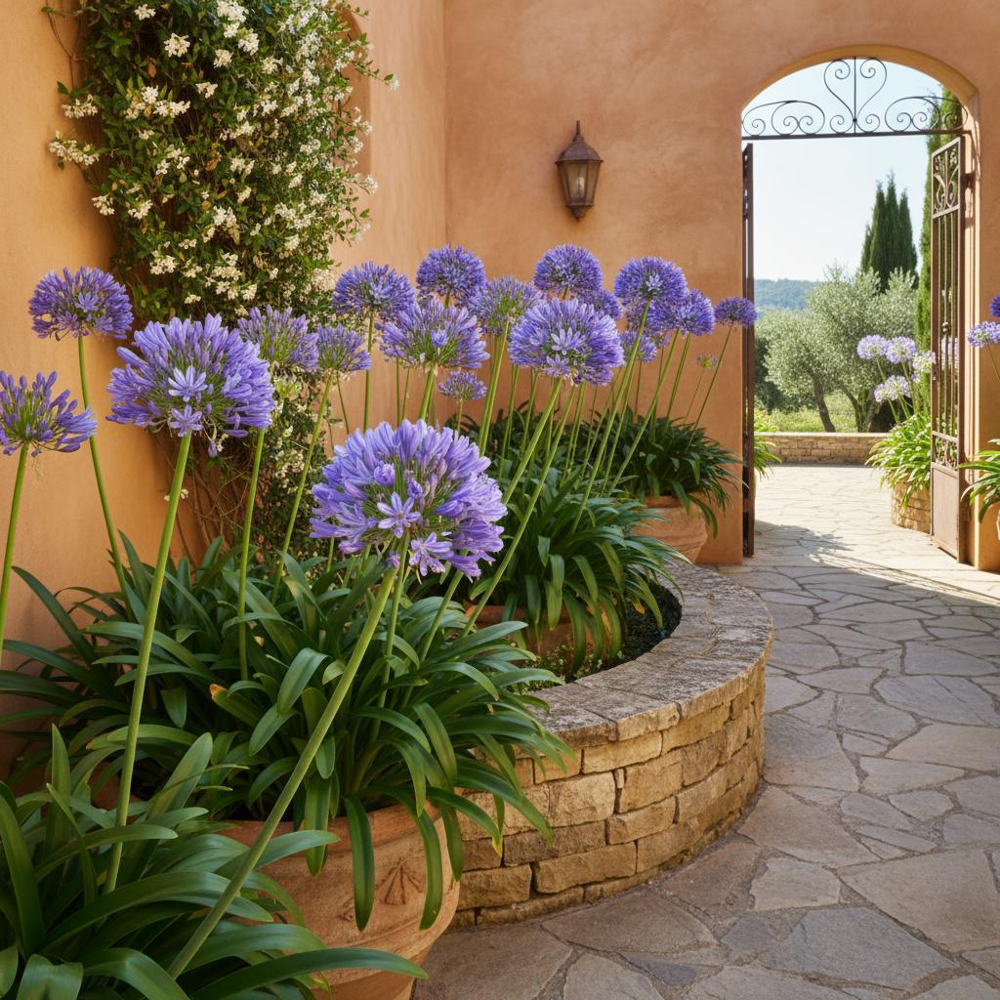
Agapanthus, commonly called African lily, produces rounded clusters of blue or white flowers above elegant, strap-like foliage. Its upright flower stems bring height and a graceful rhythm to pots and borders. While not native to ancient Greece, agapanthus suits the visual language of modern Mediterranean gardens. In colder Okanagan locations, container cultivation offers greater flexibility for winter protection.
Lavender
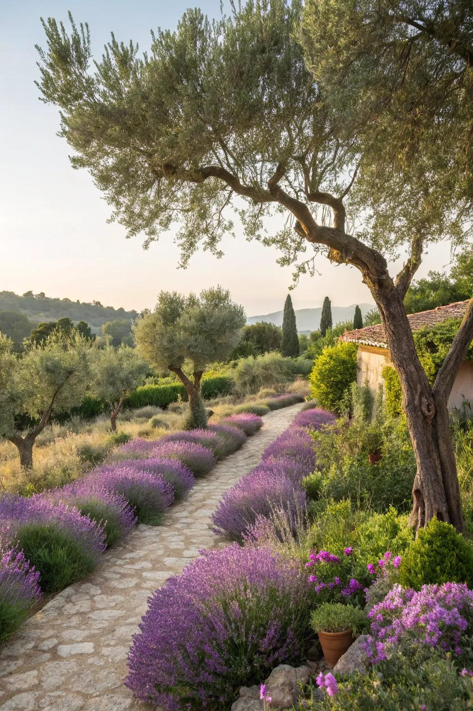
Lavender (Lavandula) is valued for its aromatic foliage, purple flower spikes, and ability to thrive in sunny, well-drained sites. Its soft colour contrasts with pale stone and terracotta, while its fragrance enriches pathways and seating areas. Plant lavender along gravel paths, around a courtyard edge, or in repeated groups beside low stone walls. Select cold-hardy cultivars and avoid waterlogged soil for reliable performance in the Okanagan.
Rosemary
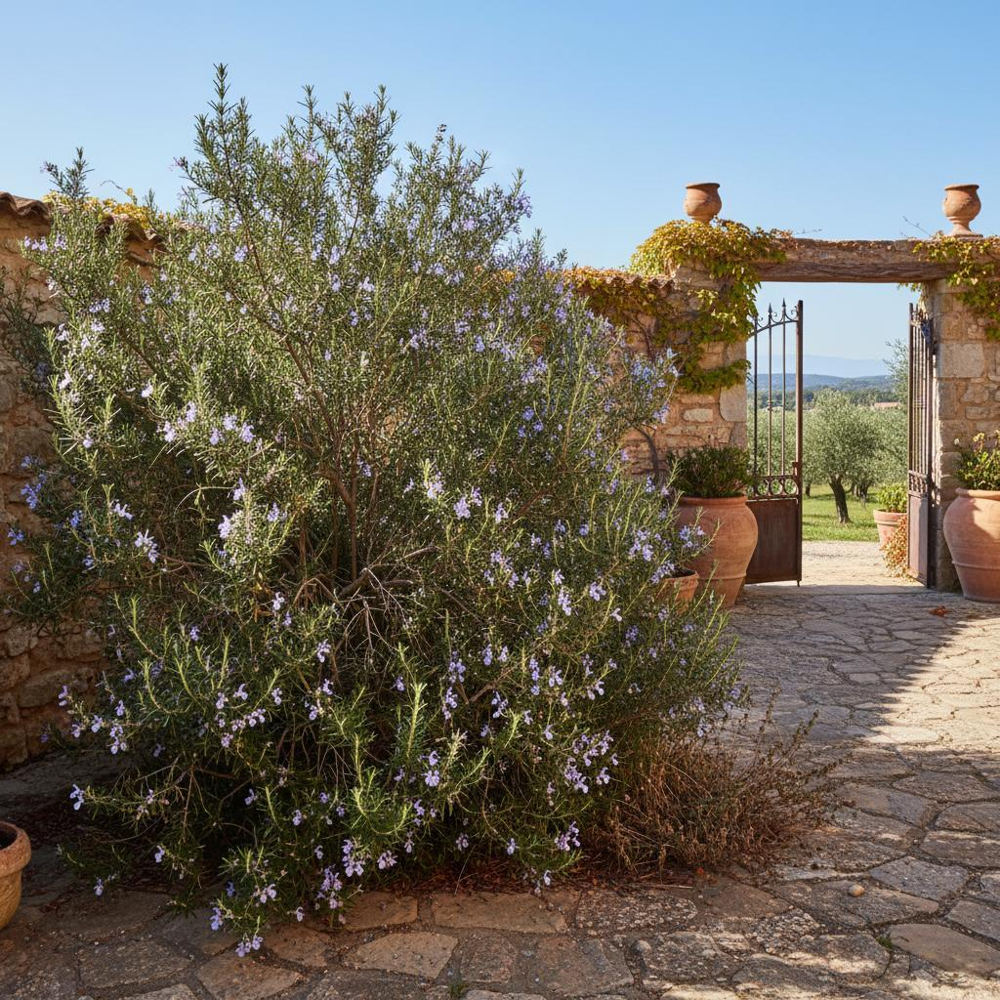
Rosemary (Salvia rosmarinus) contributes evergreen foliage, delicate blue flowers, and a distinctive herbal fragrance. Its upright or trailing forms work well beside steps, in raised stone beds, or spilling over the edge of a large container. Rosemary is especially effective near outdoor dining spaces, where its leaves can be enjoyed as a culinary herb. Because winter hardiness varies, sheltered sites and suitable cultivars are important in colder parts of the Okanagan. Other plants that complement the style include thyme, oregano, sage, bay laurel, ornamental grasses, and selected drought-tolerant perennials. These broaden the planting palette without compromising the restrained Mediterranean character.
3. Arches and Architectural Frameworks
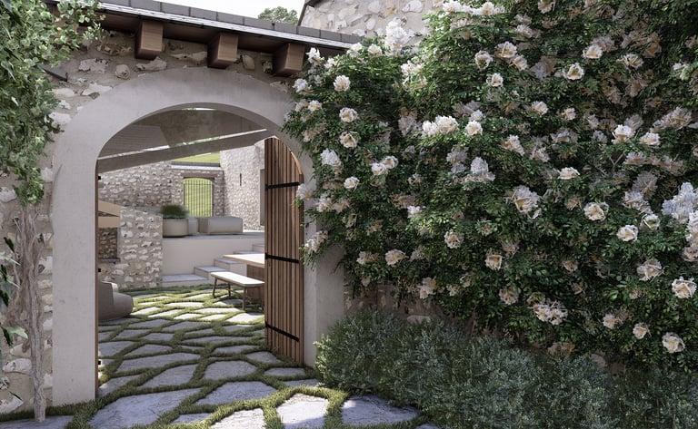
Arches, columns, and pergolas introduce a strong architectural dimension to a Greek-inspired garden. They create transitions between spaces, frame views, and establish a sense of discovery as visitors move through the landscape. Classical Greek architecture favoured proportion, balance, and the relationship between structural elements. These principles can be translated into garden design through stone gateways, columned walkways, simple pergolas, and framed entrances to courtyards.
Designs:
- Stone arches: Frame a view of an olive tree, fountain, sculpture, or distant landscape.
- Pergolas: Create filtered shade over a dining terrace or pathway.
- Columns and colonnades: Establish rhythm and provide a sense of enclosure while maintaining visual openness.
- Climbing plants: Train suitable roses, grapevines, or wisteria over a pergola to soften the architecture.
- Thresholds: Use an arch or gateway to distinguish a herb garden from a main courtyard or seating area.
In the Okanagan, a pergola can be particularly useful for managing intense summer sunshine. Deciduous climbers provide seasonal shade, while a simple stone or timber framework preserves the garden's architectural character throughout the year. For historical accuracy, it is worth distinguishing the garden traditions: the monumental colonnade belongs to Greek architectural language, while the familiar formal garden arch and elaborate ornamental pergola often reflect later Mediterranean and European interpretations.
4. Water: Fountains, Pools, and Reflective Surfaces
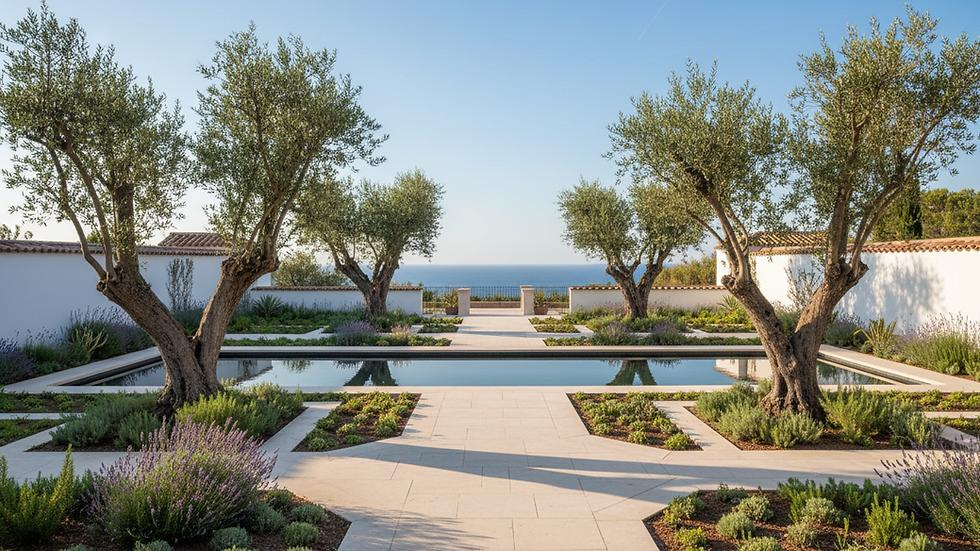
Water brings movement, sound, reflection, and a sense of tranquillity to a Mediterranean garden. In ancient Greek life, springs and fountains were important gathering places, while water also held practical and sacred significance. Not every Greek garden contained an elaborate ornamental fountain, but water remains a compelling feature in contemporary interpretations of the style. A carefully placed basin or shallow reflecting pool can introduce a cooling visual element into a sunlit courtyard. The reflection of stonework, olive foliage, and blue sky creates a subtle connection between architecture and landscape.
Water features to consider:
- Stone basins: Simple, sculptural vessels that provide a focal point without overwhelming a small courtyard.
- Wall fountains: A compact option for enclosed patios, producing a gentle sound against a textured stone wall.
- Reflecting pools: Shallow, still surfaces that mirror nearby planting and architectural forms.
- Small recirculating fountains: Introduce movement and sound while using a contained water supply.
- Naturalistic water elements: A small spring-like feature surrounded by stones and moisture-tolerant plants can evoke the connection between ancient sanctuaries and the natural landscape.
In a dry-summer climate such as the Okanagan, water features should be designed with conservation in mind. Recirculating systems, modest basin sizes, and efficient pumps help limit water use. Avoid unnecessarily large exposed pools, where evaporation and maintenance demands may be considerable.
5. Stone, Gravel, and Courtyard Flooring
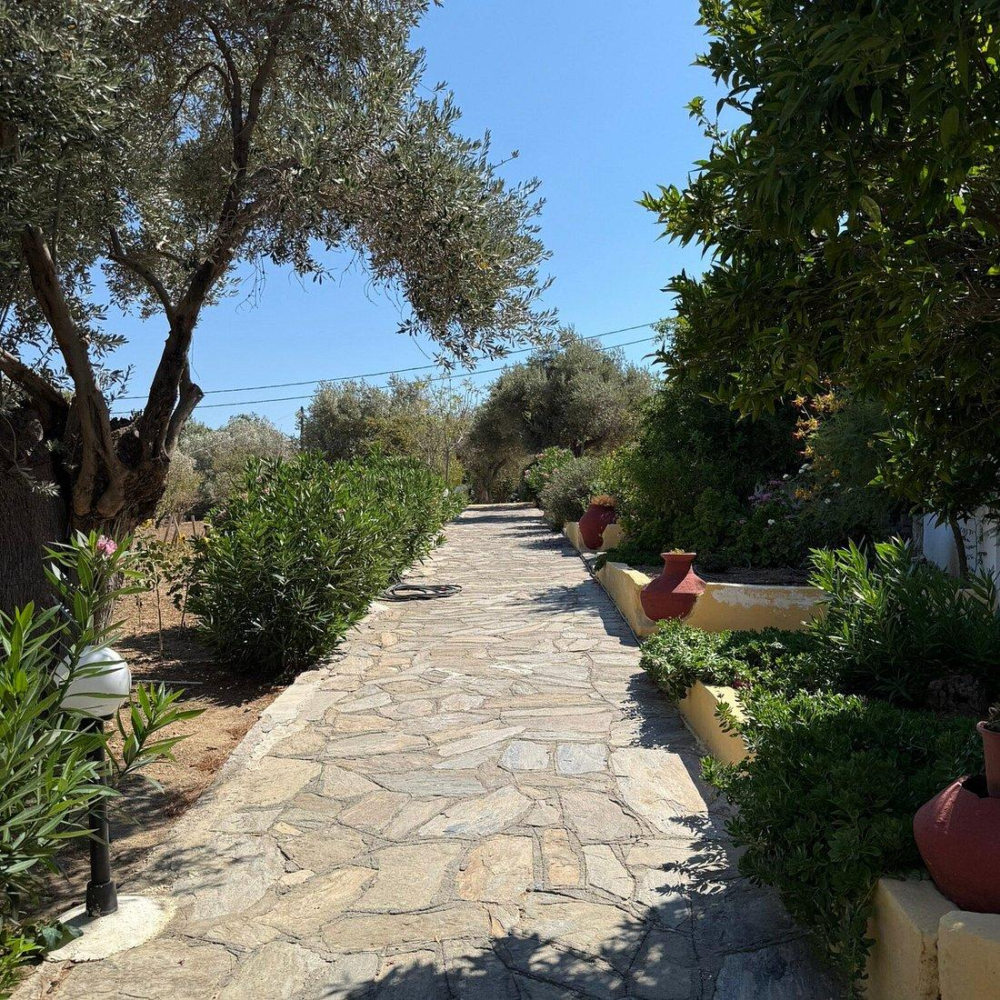
Natural materials provide the foundation of a Greek-inspired garden. Pale limestone, warm sandstone, gravel, and weathered stone establish a restrained palette that allows plants, shadows, and architectural details to take centre stage. Stone paving creates durable areas for entertaining and contemplation, while gravel offers a visually quiet surface around trees and drought-tolerant planting. Low stone walls can define garden rooms, support raised beds, and provide informal seating. The most effective designs balance hard surfaces with living greenery. A courtyard should not feel entirely paved or excessively ornamental; instead, stone and planting should work together to create a calm, welcoming environment. For Okanagan gardens, permeable gravel paths and well-drained planting beds can be especially useful. Select materials that suit local conditions, provide safe footing, and avoid directing runoff toward buildings.
6. Sculpture, Mythology, and Places for Contemplation
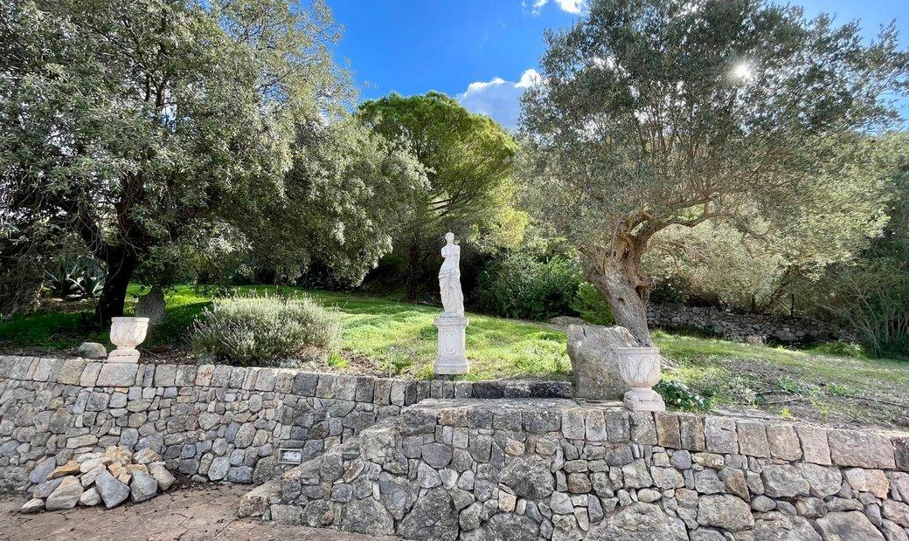
Greek garden design is closely associated with philosophy, mythology, and the appreciation of beauty. Sculpture can evoke this heritage through figures inspired by classical art, stone busts, ornamental urns, or understated reproductions of ancient forms. Rather than filling the garden with decorative objects, choose one or two pieces and allow the surrounding space to establish their significance. A statue beneath an olive tree, a stone bench at the end of a pathway, or a sculptural urn beside an entrance can become a point of quiet reflection. This approach also recalls the importance of outdoor spaces in Greek social and intellectual life. Gardens, groves, and shaded walks provided settings for conversation, teaching, and contemplation, although the best-known philosophical gathering places were not necessarily ornamental domestic gardens.
7. Creating a Greek-Inspired Garden in the Okanagan
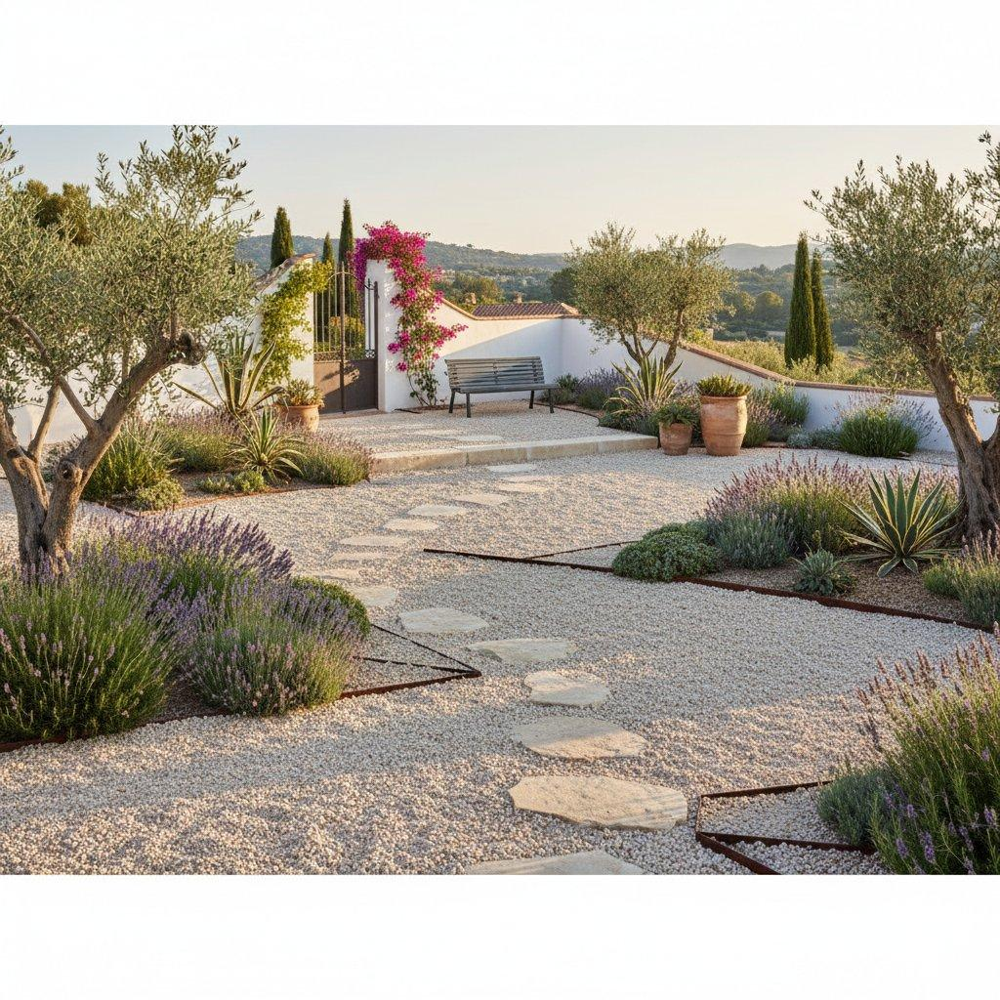
A successful Okanagan adaptation should capture the spirit of the Mediterranean without relying on plants that cannot tolerate local winter temperatures. The goal is to recreate the visual qualities of the style through structure, texture, fragrance, and carefully chosen planting.
Consider the following design principles:
1. Establish a central focal point. Use a sculptural tree, a large terracotta vessel, a classical urn, or a compact fountain.
2. Build the framework with stone. Introduce gravel pathways, pale paving, and low retaining walls.
3. Repeat aromatic planting. Use lavender, rosemary where hardy, thyme, and sage to establish continuity.
4. Add architectural foliage. Incorporate suitable agaves, ornamental grasses, and other sculptural plants in protected or appropriately hardy locations.
5. Use containers strategically. Reserve large terracotta pots for statement plants and smaller pots for herbs and seasonal flowers.
6. Provide shade and shelter. A pergola, wall, or deciduous tree can make outdoor spaces more comfortable during hot summer afternoons.
7. Plan for winter. Protect tender Mediterranean specimens, choose hardy alternatives, and design irrigation to suit the region's seasonal conditions.
The resulting garden can feel timeless rather than themed: an elegant arrangement of sun-warmed stone, aromatic herbs, sculptural foliage, and carefully framed views.
The defining character of Classic Greek Garden Design
Classic Greek garden design is ultimately about proportion, restraint, and the relationship between the built environment and nature. Its modern Mediterranean interpretation brings together terracotta containers, olive trees, aromatic herbs, architectural arches, reflective water, and natural stone to create spaces that are both visually composed and deeply connected to outdoor living. For a garden in the Okanagan, these principles offer a practical and beautiful approach: work with the climate, choose plants for their form and fragrance, and allow the materials and landscape to create a sense of harmony.